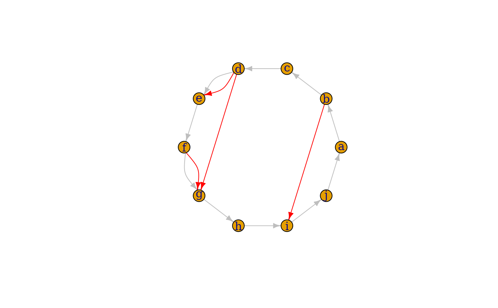

Add vertices, edges or another graph to a graph
Details
The plus operator can be used to add vertices or edges to graph. The actual operation that is performed depends on the type of the right hand side argument.
If is is another igraph graph object and they are both named graphs, then the union of the two graphs are calculated, see
union().If it is another igraph graph object, but either of the two are not named, then the disjoint union of the two graphs is calculated, see
disjoint_union().If it is a numeric scalar, then the specified number of vertices are added to the graph.
If it is a character scalar or vector, then it is interpreted as the names of the vertices to add to the graph.
If it is an object created with the
vertex()orvertices()function, then new vertices are added to the graph. This form is appropriate when one wants to add some vertex attributes as well. The operands of thevertices()function specifies the number of vertices to add and their attributes as well.The unnamed arguments of
vertices()are concatenated and used as the ‘name’ vertex attribute (i.e. vertex names), the named arguments will be added as additional vertex attributes. Examples:g <- g + vertex(shape="circle", color= "red") g <- g + vertex("foo", color="blue") g <- g + vertex("bar", "foobar") g <- g + vertices("bar2", "foobar2", color=1:2, shape="rectangle")vertex()is just an alias tovertices(), and it is provided for readability. The user should use it if a single vertex is added to the graph.If it is an object created with the
edge()oredges()function, then new edges will be added to the graph. The new edges and possibly their attributes can be specified as the arguments of theedges()function.The unnamed arguments of
edges()are concatenated and used as vertex ids of the end points of the new edges. The named arguments will be added as edge attributes.Examples:
g <- make_empty_graph() + vertices(letters[1:10]) + vertices("foo", "bar", "bar2", "foobar2") g <- g + edge("a", "b") g <- g + edges("foo", "bar", "bar2", "foobar2") g <- g + edges(c("bar", "foo", "foobar2", "bar2"), color="red", weight=1:2)See more examples below.
edge()is just an alias toedges()and it is provided for readability. The user should use it if a single edge is added to the graph.If it is an object created with the
path()function, then new edges that form a path are added. The edges and possibly their attributes are specified as the arguments to thepath()function. The non-named arguments are concatenated and interpreted as the vertex ids along the path. The remaining arguments are added as edge attributes.Examples:
It is important to note that, although the plus operator is commutative, i.e. is possible to write
graph <- "foo" + make_empty_graph()it is not associative, e.g.
graph <- "foo" + "bar" + make_empty_graph()results a syntax error, unless parentheses are used:
graph <- "foo" + ( "bar" + make_empty_graph() )For clarity, we suggest to always put the graph object on the left hand side of the operator:
graph <- make_empty_graph() + "foo" + "bar"See also
Other functions for manipulating graph structure:
add_edges(),
add_vertices(),
complementer(),
compose(),
connect(),
contract(),
delete_edges(),
delete_vertices(),
difference(),
difference.igraph(),
disjoint_union(),
edge(),
igraph-minus,
intersection(),
intersection.igraph(),
path(),
permute(),
rep.igraph(),
reverse_edges(),
simplify(),
union(),
union.igraph(),
vertex()
Examples
# 10 vertices named a,b,c,... and no edges
g <- make_empty_graph() + vertices(letters[1:10])
# Add edges to make it a ring
g <- g + path(letters[1:10], letters[1], color = "grey")
# Add some extra random edges
g <- g + edges(sample(V(g), 10, replace = TRUE), color = "red")
g$layout <- layout_in_circle
plot(g)
